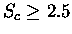
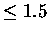
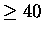

Database scanning within STAMP is unpublished, apart from a brief description in a figure
legend [16], but it has been fairly well tested
since version 2.0. Indeed, two novel similarities have resulted
in publications [9,16].
Immunglobulin domain
One example of a scan is given. The light chain variable domain
of the immunoglobulin 2FB4 is used to scan a small database of
other protein domains containing both a diverse collection of
related folds (greek key folds, including azurin, superoxide
dismutase, CD4, etc.), and completely unrelated folds (such as
globins). See the directory examples/ig for this example.
The 2FB4 domain is described in 2fb4lv.domain. To scan this
through the database type:
stamp -l 2fb4lv.domain -s -n 2 -slide 5 -prefix 2fb4lv_stamp -d some.domains -cut
`-s' specifies the SCAN mode `-slide' describes how many residues to slide the
query sequence (2fb4lv) along each sequence in the file some.domains to provide
each initial fit (i.e. the sequence of 2fb4lv is layed on top of each database
sequence at postions 1, 6, 11, etc.). `-cut' tells the program to cut down each
domain read in from some.domains according to where the similarity is found.
If it is not specified, the output will contain domain descriptors identical to
those found in `some.domains'. When one is comparing a single-domain query to
a database structure having mulitple domains, it is desirable to do this. Try running
it both ways (with and without -cut) and look at the output: you will see what I mean.
(e.g. CHAIN A is converted to A 1 _ to A 60 _ in one descriptor in the SCAN
output and A 120 _ to A 175 _ in another, since there are two repeats of the
query domain in the database structure).
The above run may take a couple of minutes, and should write the following to the
standard output (again, ignoring the header):
Results of scan will be written to file 2fb4lv_stamp.scan
Fits = no. of fits performed, Sc = STAMP score, RMS = RMS deviation
Align = alignment length, Nfit = residues fitted, Eq. = equivalent residues
Secs = no. equiv. secondary structures, %I = seq. identity, %S = sec. str. identity
P(m) = P value (p=1/10) calculated after Murzin (1993), JMB, 230, 689-694
Domain1 Domain2 Fits Sc RMS Len1 Len2 Align Fit Eq. Secs %I %S P(m)
Scan 2fb4lv 2fb4lc 1 3.819 7.880 111 105 127 45 45 7 6.31 26.13 8.28e-02
Scan 2fb4lv 2fb4l 8 9.799 10.383 111 166 111 111 110 11 66.27 64.46 0.00e+00
Scan 2fb4lv 1mcplv 1 7.802 9.561 111 113 118 94 90 10 39.82 69.03 9.06e-22
Scan 2fb4lv 1mcphv 1 5.637 8.513 111 122 125 71 68 9 18.85 47.54 7.00e-08
Scan 2fb4lv 1cmsC 1 2.152 6.421 111 148 153 27 21 4 1.35 8.78 1.00e+00
<etc.>
Scan 2fb4lv 1rnt 1 2.210 4.679 111 104 145 28 28 4 1.80 18.92 1.00e+00
Scan 2fb4lv 2sodo 1 3.586 7.776 111 151 158 39 32 7 1.32 15.23 1.00e+00
Scan 2fb4lv 8rubs skipped domain - sequence is too short
Scan 2fb4lv 2pcy 1 3.331 7.604 111 99 124 41 33 6 5.41 19.82 6.44e-02
Scan 2fb4lv 8atca 0 0.000 100.000 111 166 0 0 33 0 0.00 0.00 1.00e+00
See the file 2fb4lv_stamp.scan
where all of the fields are as for the PAIRWISE mode, save for Fits, which indicates the
number of fits that were saved to the file `2fb4lv_stamp.scan'. Note that for domain descriptors
(see some.domains) containing two Ig type folds (e.g. 2fb4l, 1cd4, etc.) that more than
one fit has been saved, since the search found both of the Ig type folds in each of
these two proteins. Not also that `Fits' is zero for several of the examples,
indicating that the no similarity was found within these proteins. Where more than one
Fit is output for a domain in the database, the best Sc, RMS etc. are reported.
2fbjlv_stamp.scan will contain all the transformations output during
the scan. Several of these will be redundant, since it is possible for a
particular match to be found twice. To remove repeated
transformations, or those not considered interesting, one must run
the program SORTTRANS on the output.
sorttrans -f 2fb4lv_stamp.scan -s Sc 2.5 > 2fb4lv_stamp.sorted
sorts the input file by Sc values, and leaves only those non-redundent
domain descriptions having an
.
In practice, I tend to
use a value of 2.0, and then sort through the output to look for
interesting similarities.
sorttrans -f 2fb4lv_stamp.scan -s rms 1.5 > 2fb4lv_stamp.sorted
sorts the input file by RMSD values, and leaves only those domain
descriptions having an RMSD 
Å. Despite its predominance in
the literature, RMSD is not a very good means of measuring structural
similarity, since low RMSDs can usually be obtained for any two structures
if one considers a small enough collection of residues.
sorttrans -f 2fb4lv_stamp.scan -s nfit 40 > 2fb4l_stamp.sortedsorts the input file by the number of atoms used in the final fitting, and leaves only those domain descriptions where nfit .
sorttrans -f 2fb4lv.scan -s n_sec 6 > 2fb4lv_stamp.sorted
sorts the input file by the number of equivalent secondary
structures, and leaves only those having 6 or more secondary
structures equivalent.
Combinations of these can be used to select out interesting domains
from a scan output. Probably the best combination involves Sc and
nfit (ie. score and nfit), since large structures can give
fortuitously large Sc values with very few fitted atoms.
The final output is in the file 2fb4lv_stamp.sorted. This is
the result of the first example (ie. -s Sc 2.5).
Note that several structures similar to the Ig type domain have
been detected, and appear (according to Sc) in the order one
might expect from knowledge of the 3D structures, sequences and
functions of these proteins.
The output from scanning is totally compatable with the other modes of
the program. Once you have performed a scan, and have sorted the
`hits' down to an interesting set, you can then use the output from
scan as the input for a multiple alignment. E.g.,
transform -f 2fb4lv_stamp.sorted -g -o ig_like.pdb
will read in the files, transform the coordinates and save them to
the file ig_like.pdb (with each chain labelled starting with a different
letter). This program is explained in one of the next sections.
stamp -l 2fb4lv_stamp.sorted -prefix ig_like > ig_like.log
will read in the transformations, and run PAIRWISE and TREEWISE comparisons to generate a multiple alignment of these structures. The results of this run are in the examples/ig directory. Note that there are several `LOW SCORE' warnings in the output (stored in ig_like.log). Note that one would normally edit the output from a scan before performaing a multiple alignment (i.e. to include only those domains one wants to consider further).